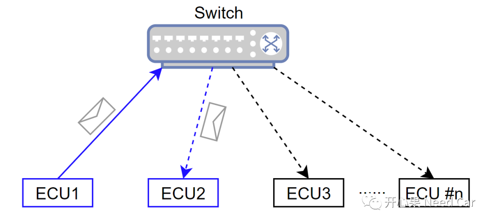
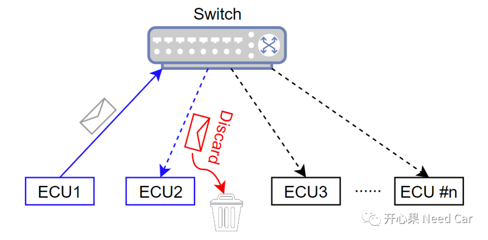
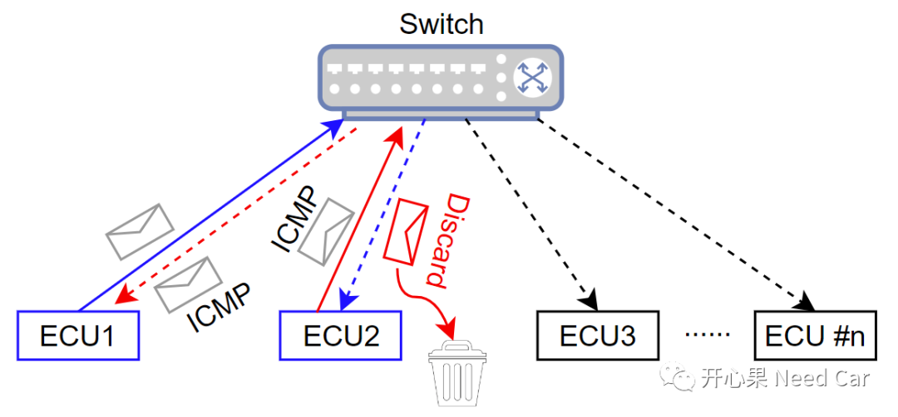
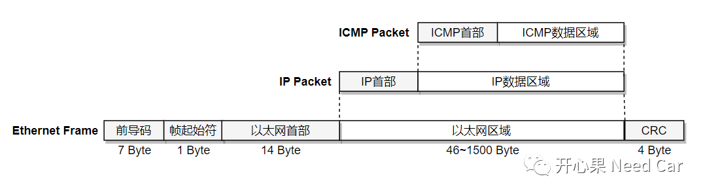
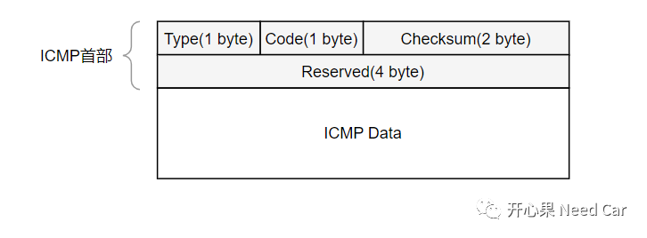
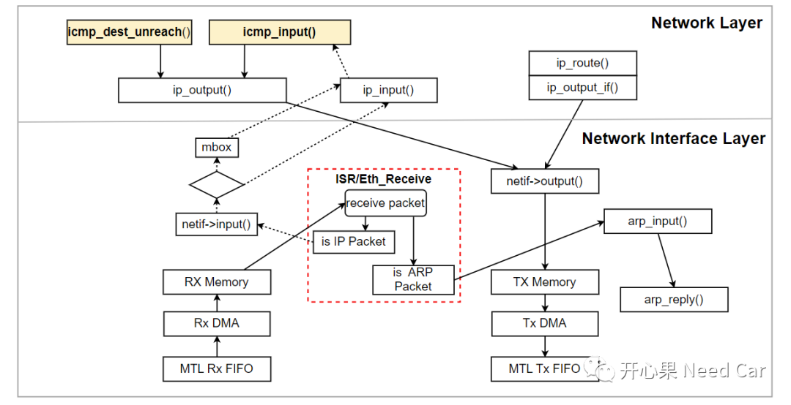
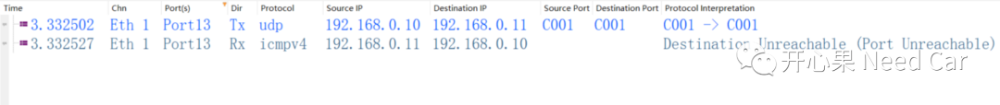
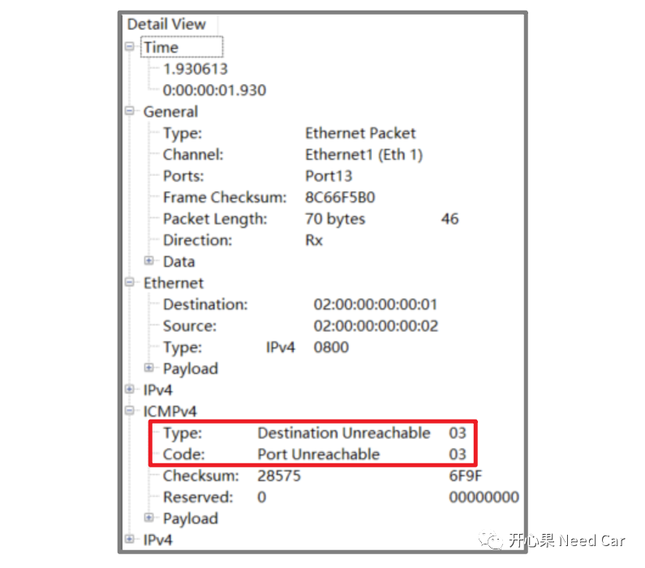

开心果 Need Car · 2023-12-14T06:39:00+08:00 · 微信原文
ICMP（Internet Control Message Protocol，网络控制报文协议），主要用来告知发送节点：发送的信息没能正确到达接收目标，并且给出没有到达目标的原因。当发送节点得到反馈以后，可以进行后续处理，eg：重发或者不处理。本文，讨论一下ICMP报文。
1、ICMP出现的背景


如果，ECU2只是把该帧数据丢弃，并不将Port错误这一事件告知ECU1，那么，ECU1会认为数据已经被正确接收。如此，就会造成两个控制器之间的"误解"，ECU1认为数据已经成功发送给ECU2，然而，ECU2却认为数据Port不对，丢弃数据。所以，面对如上的场景，怎么办呢？答：通过ICMP协议，即：ECU2通知ECU1，Port找不到。
ECU2丢弃报文的同时，发送一帧ICMP报文，通知ECU1，Port端口不对，即：端口不可达，示意如下：

2、ICMP基础

ICMP首部占用8 Byte，具体的格式定义如下所示：

1.类型（Type）：指示消息的类型，eg：目的不可达（3）、超时（11）等。
| Type | Code | Description |
| 3 | 0 | Network Unreachable（网络不可达） |
| 3 | 1 | Host Unreachable（主机不可达） |
| 3 | 2 | Protocol Unreachable（协议不可达） |
| 3 | 3 | Port Unreachable（端口不可达） |
| 3 | 6 | Destination network unknown （目标网络未知） |
| 3 | 7 | Destination host unknown (目的主机未知) |
| 5 | 0 | Redirect for network（对网络重定向） |
| 5 | 1 | Redirect for host（对主机重定向） |
| ... | ... | ... |
3.校验和（Checksum）：用于校验消息的完整性。
4.保留字段：N/A。
5.数据：包含引起ICMP消息的IP数据报首部，以及首部之后的数据。

2、ICMP报文示例
比如：客户端请求的端口号（Port），服务端没有，则服务端会响应一帧ICMP报文，类型（Type）为3（Destination Unreachable），代码（Code）为3（Port Unreachable），如下所示：


ICMP的版本又分为基于IPv4的ICMPv4和基于IPv6的ICMPv6。而车载以太网，常常基于IPv4，所以，ICMP的版本选择ICMPv4。
往期精彩回顾